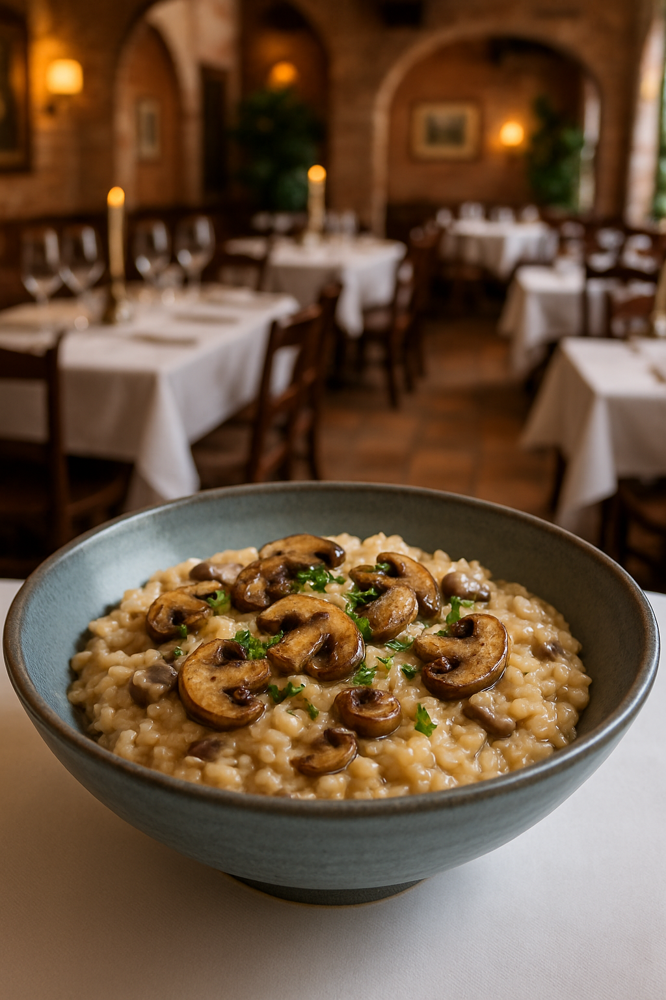
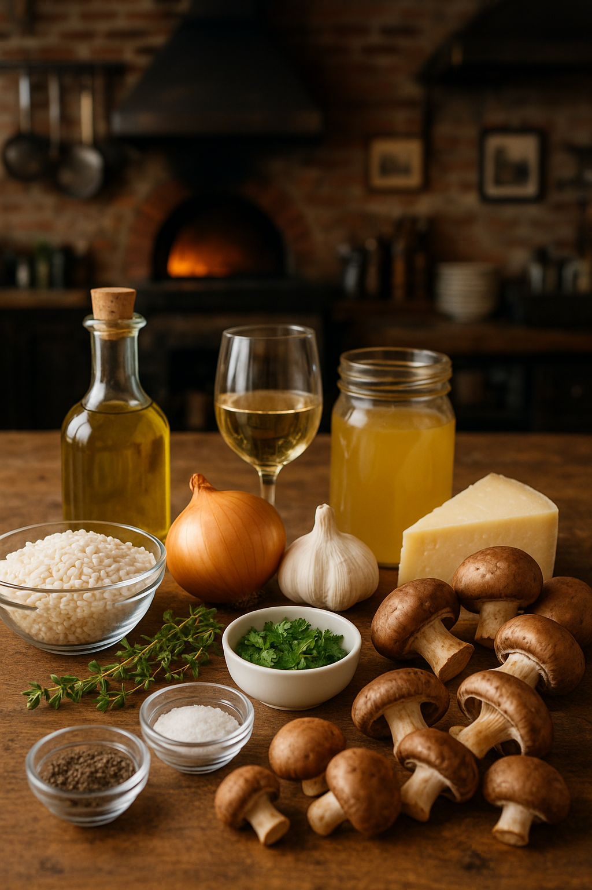

Home
Mushroom Risotto

Mushroom risotto is a creamy Italian rice dish made with Arborio rice slowly cooked in broth and stirred
frequently to release its natural starches. It features sautéed mushrooms, often enhanced with garlic,
onions, white wine, and Parmesan cheese, resulting in a rich, savory, and comforting dish.
Ingredients
- Shiitake Mushrooms
- Cremini Mushrooms
- Arborio Rice
- Extra Virgin Olive Oil
- Onion
- Garlic
- Thyme
- Vegetable Broth
- Pecorino Cheese
- Fresh Parsley
- Salt & Pepper to taste

Steps
- Sauté the mushrooms. You want them to get tender in the middle and browned and crisp around the edges. The
mushrooms need consistent contact with the hot pan in order to brown, so, for the best browning, it’s important
that you stir only occasionally. Just give them a good toss every couple of minutes. If your pan is too crowded
when you add the mushrooms all at once, feel free to work in batches.
- The risotto needs a lot of stirring! Without frequent stirring, the starches will become gummy and burn in the
pan, and you won’t end up with a smooth and creamy risotto.
- Add the broth 3/4 cup at a time. Not all at once! After each addition, stir constantly until the rice has nearly
absorbed the liquid, then pour in 3/4 cup more. The gradual additions allow you to control the consistency of
the risotto. Cook until the overall texture is creamy but the individual grains of rice retain a slight bite.
- Stir in some of the mushrooms, and pile more on top. The ones you stir in will soften slightly but infuse the risotto
with umami flavor. The ones on top will stay lightly crisp, creating a fantastic combination of textures!
- It will thicken as it sits. This mushroom risotto is best freshly made, but leftovers will keep in an airtight container
in the fridge for up to 3 days. Note that the risotto will thicken in the fridge, so you might need to stir in an extra
splash of water or stock when you reheat it.